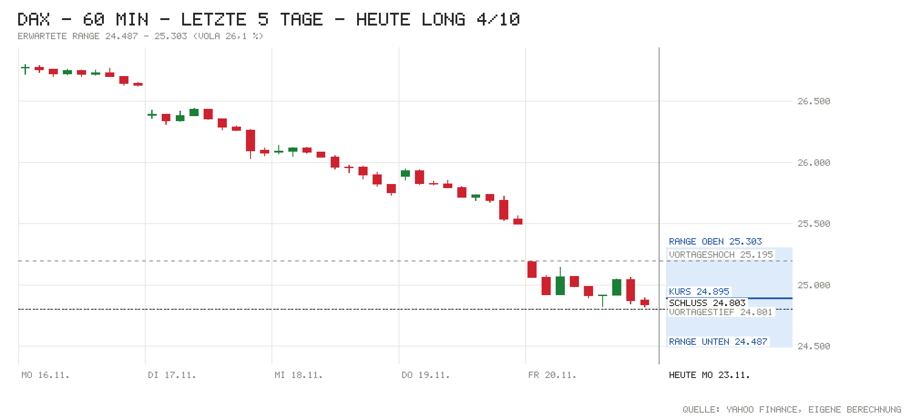

Tagesentscheidung ab 09:04 bis 17:30 Uhr
Den Ausschlag geben die kräftig steigenden US-Futures (S&P +2,23 %, Nasdaq +2,97 %) nach dem Freitags-Crash, der um 3,2 % fallende Ölpreis, hohe Short-Positionen und Bayer mit rund +7 % vorbörslich; nach sechs Verlusttagen notiert der DAX am Oktober-Tief. Wichtigstes Gegenargument: Der große Trend ist Bear, der DAX liegt unter allen drei Durchschnitten, die Renditen ziehen wieder an und die Fed-Erhöhung im Dezember gilt als sicher – die Erholung steht „auf Bewährung“, darum nur 4/10 (eigene Einschätzung).
- Kurs um 09:04
- 24.895
- Erwartete Range
- 24.487 – 25.303
- Eingepreist (Tagesoption)
- ±1,65 %
Einschätzung vom Kurs um 09:04 (Median der Indikationen L&S, J.P. Morgan, UBS) bis zum Xetra-Schluss. Range = ±1 σ für die restliche Handelszeit aus der DAX-Tagesoption (ca. 68 %). Keine Anlageberatung.
Chart

Signale
| Signal | Wirkung | Stand und Einordnung |
|---|---|---|
| Vorgaben USA | Rückenwind | Freitag: S&P 500 −3,70 %, Nasdaq 100 −5,61 %, Dow −1,93 %; S&P in der Korrektur, Nvidia rund −12 bis −14 %, Sorge um schuldenfinanzierte KI-Investitionen. Futures jetzt S&P +2,23 %, Nasdaq +2,97 %, Dow +1,53 % – kräftige Gegenbewegung signalisiert. |
| Eröffnung & erste Minuten | Rückenwind | Indikation 24.895 (+0,37 % zum Xetra-Schluss 24.802,78). Eröffnung und Hoch/Tief zum Abruf n/v. Der DAX ist weniger techlastig und entzieht sich laut dpa-AFX dem Tech-Ausverkauf. |
| Asien & China | Neutral | Tokio wegen Feiertag geschlossen (Nikkei Freitag −5,06 %). Shanghai +0,15 %, CSI 300 +0,09 % nach schwachem Start; Hang Seng −0,16 % (Eröffnung −1,08 %). Kospi laut Berichten über 4 % im Minus. |
| Datenüberraschungen | Neutral | USA Freitag: Verbraucherstimmung 51,5 vs. Prognose 51,0. Deutsche Einkaufsmanagerindizes um 9:30 Uhr noch offen (Prognose Industrie 54,1, Dienste 52,4). |
| Zinserwartung | Gegenwind | Fed 09.12.: 96 % für +25 Bp., Januar 64 %, März 58 %. EZB-Einlagensatz 2,50 %. Die Straffung belastet Bewertungen. |
| Renditen | Gegenwind | Bund 10J 3,32 % (+2 Bp.), US 10J 4,96 % live (+5 Bp.) – nach dem Rutsch am Freitag ziehen die Renditen wieder an. |
| Kreditstress | Gegenwind | FRED n/v; Ersatz: HYG −0,26 %, LQD +0,59 % am Freitag – Umschichtung von Hochzins in Qualität, leichter, kein akuter Stress. |
| Öl & Dollar | Rückenwind | Brent 89,59 USD (−3,22 %), EUR/USD 1,0997 (+0,25 %). Billigeres Öl entlastet Kosten und Inflationssorgen. |
| Trend | Gegenwind | DAX unter 21-Tage- (25.982), 50-Tage- (25.612) und 200-Tage-Schnitt (24.997). Großer Trend Bear seit 17.11. – gegen die Long-Richtung. |
| Positionierung | Rückenwind | COT 17.11.: Hebel-Fonds im S&P-Future netto −234.978 Kontrakte. Viel Short bietet Treibstoff für Eindeckungen (eigene Einschätzung). |
| Unternehmensnachrichten | Rückenwind | Bayer vorbörslich rund +7 %: US-Gericht genehmigt den Glyphosat-Sammelvergleich. Sonst kaum Unternehmenstermine. |
| Profi-Sicht | Neutral | ING THINK: „Uneasy calm as markets stabilise“ – Stabilisierung, aber der Dollar bleibt durch die straffe Fed gestützt. |
| Termine bis 17:30 | Neutral | Einkaufsmanagerindizes Europa (9:15–10:30) und USA (15:45), BoE-Mitglied Pill 14:00. Kein Großereignis im Fenster. |
Großer Trend (3-Monats-Momentum)
- Stand
- Bear
- Seit
- 17.11. (7 Wechsel in 3 Monaten)
- Schluss 20.11.
- −5,57 % vs. Zins +0,61 %
- Heute dreht es bei Schluss über
- 26.447 (jetzt −5,9 %)
Mit dem Kurs von jetzt bliebe das Signal Bear; eine Wende ist heute praktisch ausgeschlossen. Bull = Rendite der letzten 3 Monate über dem Geldmarktzins, Bear = darunter. Regel: Rendite der letzten 63 Handelstage (≈ 3 Monate) gegen den EZB-Einlagensatz, jeden Tag zum Schluss neu entschieden, Zeitrahmen Tageskerzen (nach Antonacci 2014, dort monatlich über 12 Monate; täglich entschieden dreht es öfter falsch). Keine Anlageberatung.
Bilanz von gestern
20.11.: Short 5/10 – Richtung richtig, +373 Punkte (Kurs zur Notiz 25.176, Schluss 24.803, Hoch 25.195, Tief 24.814). Range ±296 verfehlt (Bewegung −373); bisher 54 % von 13 Tagen getroffen (Soll ca. 68 %). Gesamt seit Start: 13 Einschätzungen, Richtung richtig 31 %, Summe −1.166 Punkte bis Schluss (Schnitt −90).
Marktlage
| Markt | Stand | Veränderung |
|---|---|---|
| DAX (Schluss 20.11.) | 24.802,78 | −2,60 % |
| DAX (Eröffnung heute) | n/v | n/v |
| DAX (jetzt, Kurs zur Notiz 09:04) | 24.895 | +0,37 % |
| S&P 500 (Schluss 20.11.) | 6.910,39 | −3,70 % |
| Nasdaq 100 (Schluss 20.11.) | 25.028,98 | −5,61 % |
| Dow Jones (Schluss 20.11.) | 48.147,33 | −1,93 % |
| US-Futures (S&P / Nasdaq) | 7.089,50 / 25.871,75 | +2,23 % / +2,97 % |
| Nikkei 225 (Schluss 20.11., heute Feiertag) | Eröffnung 58.552 → Schluss 56.437 | −5,06 % |
| Shanghai Composite | Eröffnung 3.503,52 → Schluss 3.538,95 | +0,15 % |
| CSI 300 | Eröffnung 3.931,47 → Schluss 3.958,29 | +0,09 % |
| Hang Seng | Eröffnung 22.168,19 → aktuell 22.374,79 | −0,16 % |
| EUR/USD | 1,0997 | +0,25 % |
| Brent (USD/Barrel) | 89,59 | −3,22 % |
| Gold (USD/Unze) | 3.623,20 | +3,07 % |
| VIX (Schluss 20.11.) | 35,89 | +26,20 % |
China: Festland startete im Sog des KI-Ausverkaufs schwächer und drehte im Verlauf leicht ins Plus; ING spricht von Stabilisierung nach politischer Unterstützung in Asien, einen eigenen Auslöser für die Sitzung fand ich nicht. Japan: Feiertag (Tag der Arbeit), Handel ab 24.11. Farben bei Brent, Gold und VIX nach Wirkung auf Aktien. DAX-Eröffnung lag zum Datenabruf (Yahoo, bis 15 min verzögert) noch nicht vor.
Anleihen & Zinsen
| Markt | Stand | Veränderung |
|---|---|---|
| Bund 2J | 3,09 % | +1 Bp. (vs. Bundesbank 20.11.: 3,08 %) |
| Bund 10J | 3,32 % | +2 Bp. (Vortagesschluss 3,30 %) |
| US-Treasury 2J | 4,69 % (live) | +6 Bp. (offiziell 20.11.: 4,63 %) |
| US-Treasury 10J | 4,96 % (live) | +5 Bp. (Vortagesschluss 4,91 %); 1 Woche (offiziell): −23 Bp. |
| Fed, Sitzung 09.12. | Erhöhung um 25 Bp. erwartet | 96 %; Jan. 64 %, März 58 % |
| EZB-Einlagensatz | 2,50 % | zuletzt +25 Bp. (16.09.) |
| Euro-Hochzins-Aufschlag | n/v (FRED) | n/v |
| US-Hochzins (Ersatz: HYG) | 76,33 USD | −0,26 % (Tag) |
Bund: CNBC-Livekurs, 2J gegen Bundesbank-Vortageswert. US-1-Wochen-Vergleich aus der offiziellen Treasury-Kurve (20.11.: 4,92 % vs. 5,15 %).
Termine heute
- 09:15 Frankreich: Einkaufsmanager Industrie – Prognose 49,8 · zuvor 49,5; Dienste – Prognose 47,4 · zuvor 46,2
- 09:30 Deutschland: Einkaufsmanager Industrie – Prognose 54,1 · zuvor 54,2; Dienste – Prognose 52,4 · zuvor 52,5
- 10:00 Eurozone: Einkaufsmanager Industrie – Prognose 52,7 · zuvor 52,7; Dienste – Prognose 51,8 · zuvor 51,4
- 10:30 UK: Einkaufsmanager Industrie und Dienste – Prognose je 53,0 · zuvor 52,8
- 14:00 BoE-Chefvolkswirt Pill spricht
- 15:45 USA: Einkaufsmanager Industrie – Prognose 54,5 · zuvor 54,9; Dienste – Prognose 55,6 · zuvor 56,1
- 22:00 New-York-Fed-Präsident Williams spricht (nach Xetra-Schluss)
- Keine Quartalszahlen von DAX-Werten.
Nachrichten zu DAX-Werten
- Bayer: Ein US-Gericht hat den Glyphosat-Sammelvergleich genehmigt; die Aktie lag vorbörslich rund 7 % im Plus. Einschätzung: klar positiv – ein großes Rechtsrisiko wird kalkulierbarer.
- Gesamtmarkt: Nach sechs Verlusttagen steht der DAX auf dem tiefsten Stand seit Anfang Oktober, mehr als 8 % unter dem Rekord von gut 27.000 Punkten Mitte November. Consorsbank-Analyst Jochen Stanzl spricht von einer „Erholung auf Bewährung“. Einschätzung: Gegenbewegung wahrscheinlich, aber anfällig, solange die Tech-Werte nicht drehen.
- KI-nahe Werte (SAP, Siemens Energy, Infineon): Keine eigenen Meldungen gefunden; der Freitags-Ausverkauf bei US-Chipwerten (Nvidia, Broadcom je über −10 %) wirkt nach. Einschätzung: Sie dürften der Nasdaq-Erholung folgen, mit hoher Schwankung (eigene Einschätzung).
Profi-Sicht & Positionierung
- ING THINK: FX Daily: Uneasy calm as markets stabilise – die Futures erholen sich um rund 2 %, Asien stabilisiert sich; ING erwartet, dass der Dollar seine Gewinne vor heißen US-Inflationsdaten hält, und erinnert daran, dass Aktienkorrekturen seit 2022 „kurz und heftig“ verliefen. Yen und Franken bleiben gefragt.
- Positionierung (COT, Stand 17.11.): Hebel-Fonds im S&P-Future netto −234.978 Kontrakte (Shorts um 68.082 verringert), Vermögensverwalter netto +895.049 (−19.081). Im Nasdaq-Future Hebel-Fonds netto −10.928 (−24.895). In 10-jährigen Treasuries Hebel-Fonds netto −2,48 Mio. (−181.116). Der Datenstand liegt vor dem Crash vom Freitag.
Quellen
- Marktdaten der Skripte: Amber Terminal/Yahoo Finance (Kurse, Futures), onvista (Indikationen L&S, J.P. Morgan, UBS; VDAX), Eurex (DAX-Tagesoption ODAP), Nasdaq (Kalender), CNBC (Bund- und US-Kurve), Bundesbank, US-Treasury, CFTC (COT), EZB-Datenbank, ING THINK (Artikelliste)
- onvista/dpa-AFX: DAX-FLASH – Dax im globalen Tech-Ausverkauf vor robustem Start (23.11.2026)
- ARIVA/dpa-AFX: Aktien Frankfurt Ausblick – Dax mit „Erholung auf Bewährung“, Bayer stark (23.11.2026)
- Fortune: AI selloff drags the S&P 500 into a correction (20.11.2026)
- Fox Business: Stock market slide wipes out Nasdaq gains for the year
- Yahoo Finance: Futures jump nearly 2% after brutal tech selloff
- ING THINK: FX Daily – Uneasy calm as markets stabilise (23.11.2026)